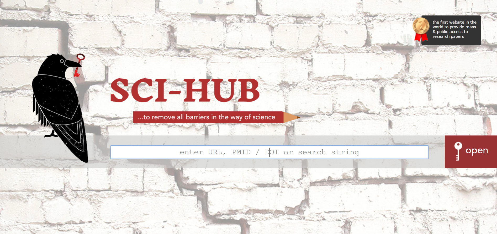

免费的全文数据库推荐
1、SCI-Hub ☆☆☆☆☆
一句话点评：五星级推荐，学术界40%的英文全文文献可查阅并下载。
2、Google 学术 ☆☆☆☆☆
一句话点评：谷歌在国内镜像有很多，这里推荐http://scholar.glgoo.org/，这个网址具有一定权限，可以下载5%的文献。
3、百度学术 ☆☆☆☆
一句话点评：如果你需要的是中文参考文献，那么使用百度学术会比较便捷。
SCI-HUB介绍及使用说明

对于科研民工们，肯定很多人接触过SCI-Hub，一个很神奇的免费下载文献的网站。
目前的网址是下面这三个：
（如需及时了解最新SCI-Hub 的可用网址或者科研实用网址，请收藏本文页面；如发现地址不可用，可在微信后台留言或者发邮件至 service@renrenlab.com）
网站使用方法还是同原来的http://www.sci-hub.org/，如果不清楚可以滑到下面看看简单用法说明。
SCI-Hub使用方法说明：
SCI-Hub接受三种查询输入：
（1）文章的doi
（2）Pubmed ID
（3）全文的URL地址
分别说明如下：
（1）文章的doi
上Pubmed上去找到对应的文章，绝大部分文章都会有个唯一的doi编码
找到doi后把10.1111/his.13040粘贴到sci-hub的搜索框中，搜索即可，有时候会要求输入验证码。
（2）Pubmed ID(PMID)
过程跟上面一样，不再赘述。
（3）全文的URL地址
比如我们要下载一篇nature的文章，文章地址是：
http://www.nature.com/nature/journal/vaop/ncurrent/pdf/nature18954.pdf
稍微加点东西，把sci-hub的网址加进去，比如sci-hub.ac，弄成下面的样子:
http://www.nature.com.sci-hub.ac/nature/journal/vaop/ncurrent/pdf/nature18954.pdf
就可以下载全文了。简单不？